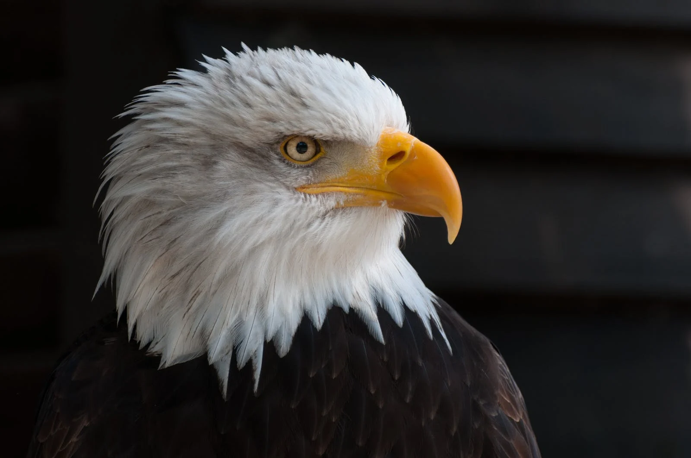

Jehan Leruitte
Fondateur de véloTrip, une association pour
randonneurs cyclistes
Je suis un petit pensionné, et je brasse mon propre café
Education
- Ecole primare Saint Paul à liége
- Humanités scientifiques B - Athénée Jules Bordet, à Bruxelles
- Candidat en mathématique - Université Libre de Bruxelles
-
Graduat en informatique - Institut Paul Lambin, annexé à l'UCL, à
Bruxelles
-
Ingénieur commercial - Hautes Etudes Commerciales Saint-Louis, à
Bruxelles
- Bachelier en informatique - Institut de promotion sociales, Arlon
- Web Designer - Institut de promotion sociales, Arlon
Work experience
| iOs develpoment |
⭐⭐ |
| Web develpoment |
⭐⭐⭐⭐⭐ |
| Painting |
⭐ |
Mes hobbies
- Lire
- faire du vélo
- me promener